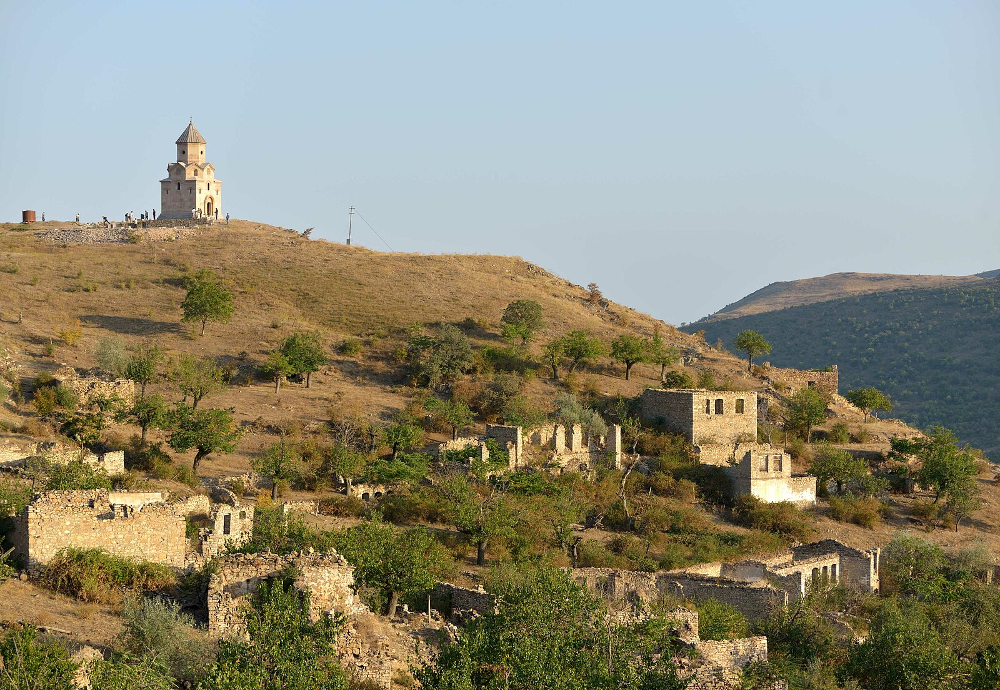
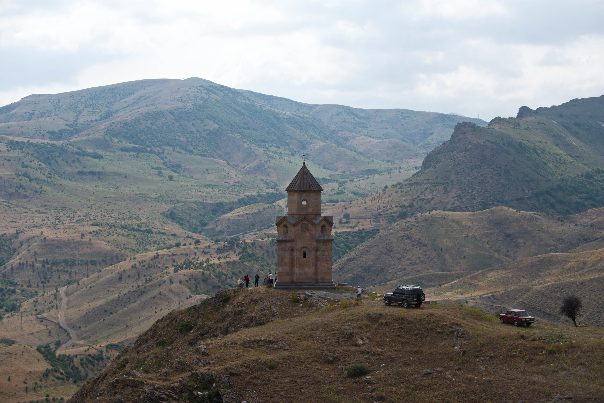

(1).png)

Հադրութի շրջան, Արցախի Հանրապետության վարչատարածքային ամենաբարձր միավոր, որն ընդգրկում է երկրի հարավարևելյան մասը։ Շրջանի վարչական կենտրոնը Հադրութ քաղաքն է։ Շրջանի տարածքի զգալի մասը զբաղեցնում են թավ անտառները, որոնք հարուստ են բազմազան պտուղներով։ Իսկ Քիրսի լեռնաշղթայի Դիզափայտ լեռան լանջերը ծաղկառատ, խոտառատ արոտավայրեր են։ Լեռնային կտրտված մակերևույթի պատճառով դաշտավարության համար նպաստավոր հողատարածքներն ավելի քիչ են։

Շրջանի տարածքը համընկնում է պատմական Արցախի Դիզակի մելիքության տարածքին և աչքի է ընկնում հայկական պատմաճարտարապետական մեծ հետաքրքրություն ներկայացնող բազմաթիվ հուշարձաններով։ Տարածքի գերակշռող մասի բարձրությունը ծովի մակերևույթից կազմում է 700-900 մ, իսկ ամենաբարձր կետը Դիզափայտ լեռան գագաթն է (2480 մ)։ Դիզափայտի «Սպիտակ տաճարը» հնագույն ուխտատեղի է։
Հադրութի Քարտեզ
Սեղմեք համայնքի վրա՝ մանրամասն տեղեկություն ստանալու համար